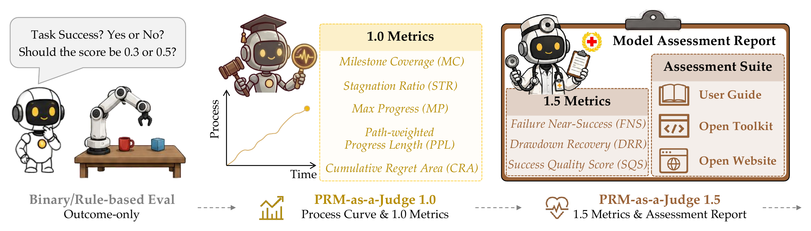
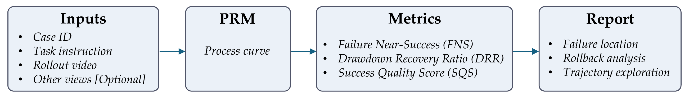
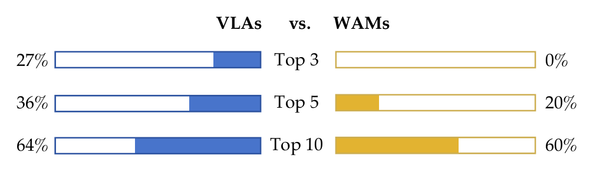
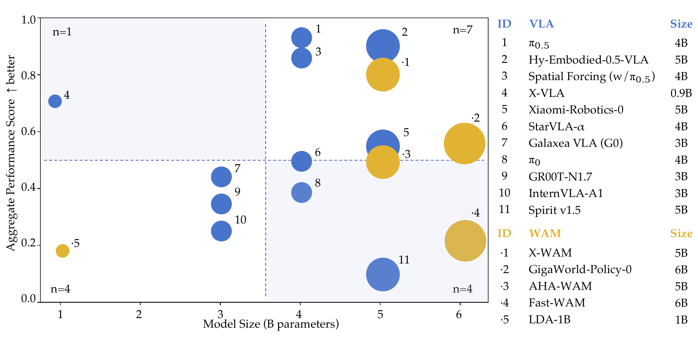
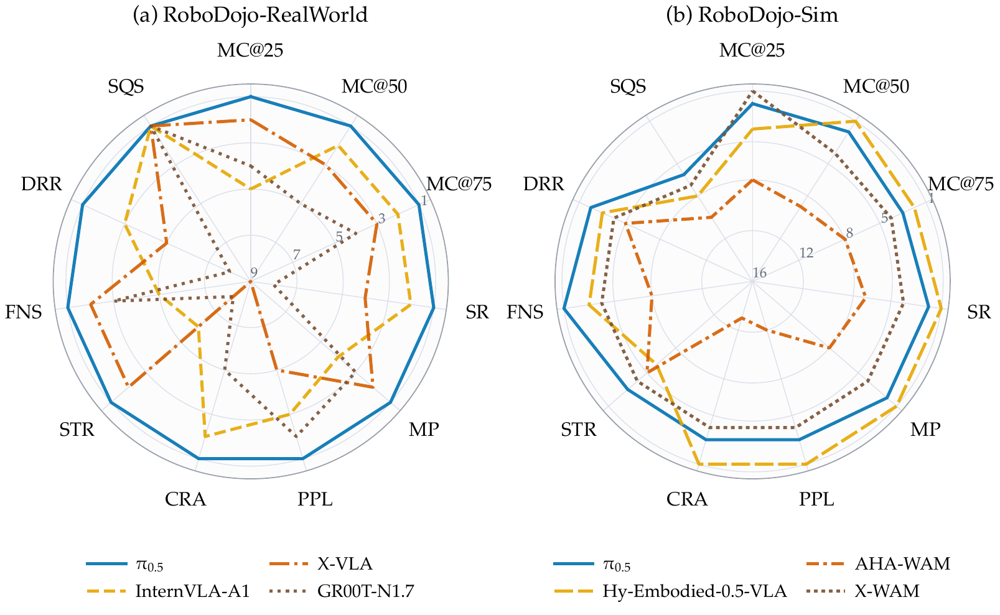
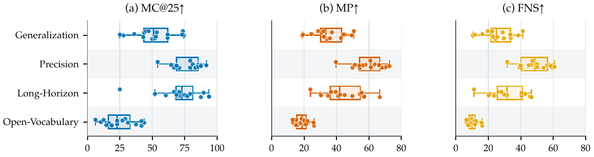
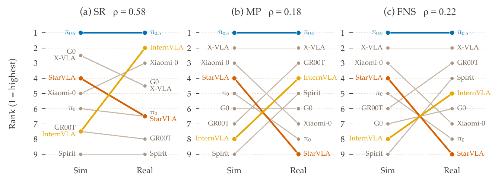
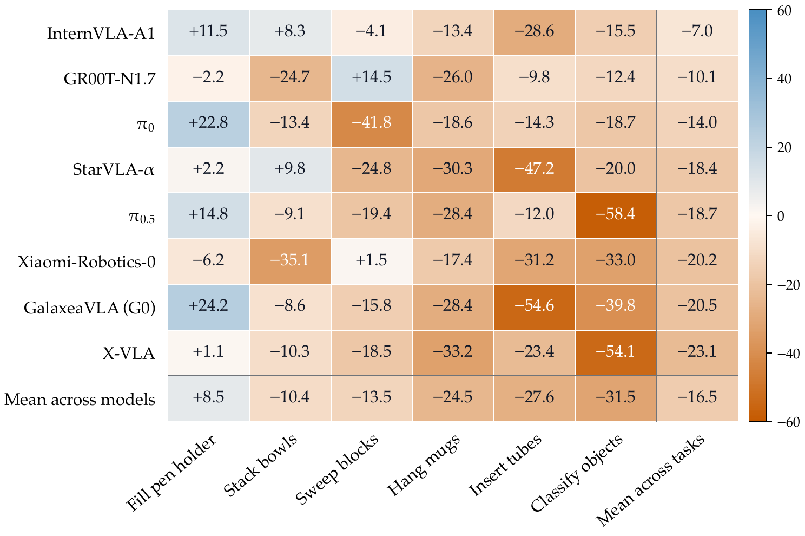
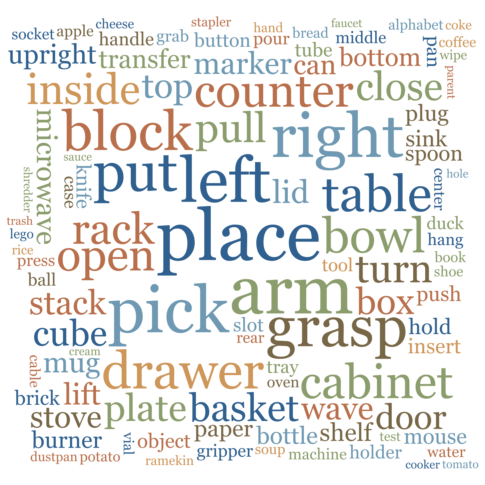

PRM-as-a-Judge 1.5
PRM-as-a-Judge 1.5: A Toolkit for Robot Process Assessment
From dense progress curves to doctor-style model assessment: failure proximity, recovery, success quality, and a stronger benchmark for the Judge itself.
PRM-as-a-Judge 1.5 is a toolkit for robot process assessment that turns rollout videos into dense progress curves and derives fine-grained metrics. Building on the 1.0 OPD suite, it adds FNS, DRR, and SQS for failure proximity, recovery, and success quality; evaluates mainstream embodied models; introduces RoboPulse++ to audit progress judges; and releases metric and visualization tools for reproducible process evaluation.
1. From Process Scores to Model Assessment
Robotic evaluation has already started moving beyond binary success rates. A dense progress curve can tell us where a rollout advanced, stalled, or regressed. But a single, unconditional set of trajectory scores is still not enough to answer the questions practitioners actually ask.
Failed rollouts can terminate at radically different levels of capability. Successful rollouts can reach the same goal through radically different execution paths. And when a policy loses progress, the setback matters differently depending on whether it recovers.

2. An End-to-End Assessment Pipeline
PRM-as-a-Judge 1.5 keeps the central interface of version 1.0: a task instruction and rollout video are converted by a Process Reward Model into a normalized progress curve Φ(t). The upgrade happens after that shared representation is constructed.

- Inputs. Each rollout is organized with a unique Case ID, task instruction, rollout video, and optional additional views.
- PRM. A process reward model estimates task completion at each frame or timestamp, producing a dense progress curve from paired or sequential observations.
- Metrics. The progress curve is translated into the expanded OPD suite, including FNS, DRR, and SQS, to assess effectiveness, failure behavior, and recovery.
- Report. The final report combines failure location, rollback analysis, and trajectory exploration, synchronizing the rollout video with its progress curve for detailed inspection.
The resulting report links model-level comparisons to trajectory-level evidence. Users can move from a leaderboard row to a failure profile, then inspect the exact frame where progress was lost or recovered.
3. Three New Conditioned Metrics
The 1.0 OPD suite remains the foundation: MC and MP describe reachability, PPL describes path efficiency, and CRA and STR describe regression and stagnation. Version 1.5 adds three diagnosis-level summaries with explicit eligibility conditions.
Failure Near-Success
A composite of MP, MC@50, and MC@75 for failed rollouts.
How close a failed rollout came to completion.
Drawdown Recovery Ratio
The largest subsequent recovery divided by the maximum drawdown for rollouts that experience a drawdown.
How much of the largest setback is recovered.
Success Quality Score
A composite of PPL, CRA, and STR for successful rollouts.
The efficiency and stability of successful execution.
How to Read the Expanded OPD Suite
The expanded suite organizes trajectory assessment into three complementary levels. Each level answers a different question about model behavior:
- Outcome: MC and MP describe task reachability, showing which milestones a model reaches and the furthest progress it achieves.
- Process: PPL measures how directly and efficiently the trajectory reaches its best state.
- Diagnosis: CRA and STR expose regression and stagnation, while FNS, DRR, and SQS turn these process signals into outcome-conditioned assessments of failure proximity, recovery, and successful execution quality.
4. What the Large-Scale Assessment Reveals
Evaluation Setup
PRM-as-a-Judge 1.5 evaluates released rollout videos on RoboDojo-RealWorld and RoboDojo-Sim, without fine-tuning or modifying the evaluated models. RealWorld focuses on challenging deployment conditions, while Sim covers generalization, memory, long-horizon behavior, and instruction following.
The evaluation reports reachability, failure-side progress, recovery behavior, success-side quality, and failure fingerprints. DRR is computed only for rollouts with an eligible drawdown; FNS summarizes failed trajectories before termination; and SQS assesses the efficiency, stability, and smoothness of successful trajectories.
4.1. Which is stronger, VLAs or WAMs?
VLAs generally outperform WAMs under different metrics.
Using the overall rankings across the 11 evaluation metrics, we compare how VLAs and WAMs are represented among the highest-ranked methods rather than relying on a single score.
VLAs occupy a substantially larger share of the Top-3, Top-5, and Top-10 positions. This rank-based view therefore shows stronger overall VLA competitiveness across multiple dimensions of process assessment.

4.2. Does a larger model always result in better performance?
Larger model size does not guarantee stronger performance.
We compare parameter count with average rank across all 11 evaluation metrics. The dashed median lines separate model size and aggregate performance, while the shaded regions highlight models that fall on opposite sides of those medians.
No clear positive size-performance relationship emerges: several relatively small models outperform substantially larger counterparts, while some larger models remain in weaker ranking regions.

4.3. Which model is generally the strongest?
π0.5 is generally the strongest model across metrics.
Using the radar comparison, we find that π0.5 remains broadly strong across reachability, progress depth, efficiency, recovery, failure proximity, and stability, rather than leading through only one isolated metric.
The two panels compare RoboDojo-RealWorld and RoboDojo-Sim. SQS is not compared in the real-world panel because most models have success rates too low for a reliable estimate, so those values are shown at a common radius.

4.4. What tasks are existing embodied models relatively better at?
Existing embodied models are relatively better at Precision tasks.
Across MC@25, MP, and FNS, Precision is the strongest category. Long-Horizon and Generalization form the next tier: models often make meaningful early progress, but reach less depth and show weaker near-success behavior.
Open-Vocabulary is the most difficult category, with tightly clustered low scores. Long-Horizon also has the largest variance across models, making it particularly useful for distinguishing relative embodied capability.

4.5. Does simulation performance correlate with real-world performance?
Simulation and real-world performance show only a weak positive correlation.
We align nine models shared by the Sim and Real leaderboards, then compare six tasks with matching objectives. Rank correlations are only low to moderate, with Spearman ρ ranging from 0.18 to 0.58.
- Simulation is not a substitute for real evaluation. Rankings shift substantially, and every model has a negative average Sim-to-Real gap in the heatmap.
- Simpler interactions transfer better. Fill pen holder has a positive average gap, while Stack bowls and Sweep blocks degrade less for some models.
- Precise contact exposes the largest gap. Classify objects, Hang mugs, and Insert tubes degrade strongly for most models under real deployment.


5. RoboPulse++: Interval-Level Verification of Progress Judges

RoboPulse++ extends pairwise state comparison to temporally contiguous intervals across complete robot executions. Each interval is labeled Rising or Falling, avoiding the need for a universal absolute completion percentage across diverse robots and tasks.
- Data coverage: 439 real-world trajectories (62.7%) and 261 simulation trajectories (37.3%).
- Task coverage: atomic, compositional, and long-horizon manipulation, including grasping, placing, articulated objects, sorting, stacking, tool use, and multi-stage tasks.
- Annotation: annotators use the task instruction and full trajectory context to mark meaningful progress or regression intervals.
Selected progress-direction Accuracy results on RoboPulse++. Specialized PRMs provide the strongest overall judgments.
Evaluation protocol. Pair Style judges adjacent observations, while Sequence Style uses ordered observations. Videos are sampled at 1 FPS with task instructions; continuous PRM changes receive a five-frame causal moving average, and interval-boundary predictions are filtered before Macro-F1, Accuracy, and class-wise metrics are computed.
Experimental Results: Two main patterns emerge from the RoboPulse++ evaluation.
- Specialized PRMs provide the strongest and most balanced progress judgments. Robo-Dopamine (Forward) reaches Macro-F1 0.77 and Accuracy 0.84, versus 0.58 and 0.63 for Gemini 3.1 Pro in Pair Style, the most competitive general-purpose VLM setting.
- Falling progress remains materially harder to recognize than Rising progress. The best Falling F1 is 0.63, compared with 0.92 for Rising, with the gap driven primarily by lower Falling recall.
Falling error analysis. Among 155 sampled Falling intervals, 78.1% are interaction-relation failures and 21.9% are task-order failures.
History helps recognize regression. On context-dependent cases, RoboMeter reaches 0.901 Falling accuracy and 0.940 overall accuracy, compared with 0.408 and 0.746 for Robo-Dopamine (Forward).
6. Interactive Trajectory Explorer
Experience the demo firsthand below. Choose RoboDojo-Sim or RoboDojo-RealWorld, select a rollout by model and task, and drag the timeline to align video playback with the progress curve. The expanded OPD metrics, including FNS, DRR, and SQS when applicable, update concurrently.
This module provides a temporal audit of an individual execution. Compare rising, regressing, and stagnating curve segments with the robot's physical actions, then inspect failure proximity, recovery, and successful-execution quality at the trajectory level.
7. Conclusion
PRM-as-a-Judge 1.5 is a toolkit for moving robotic evaluation beyond binary success rates and rule-based scores. Its expanded OPD suite adds three conditioned metrics, while the large-scale assessment shows that process evaluation can expose behavioral signatures that outcome-only evaluation misses.
The technical report highlights three directions for extending this foundation:
- Better PRMs. Our results suggest several directions for improving the progress judge itself.
Temporal Context
Use sequence-style modeling and broader temporal context to judge progress and regression more consistently.
Negative-progress Supervision
Train with more real failed and regressive trajectories to improve recognition of Falling progress.
Low-cost Adaptation
Support new tasks, viewpoints, embodiments, and corner cases without requiring full retraining.
Richer Supervision
Add future-state, video-prediction, and other temporal objectives beyond scalar progress targets.
- Add richer evidence for process diagnosis. Progress curves can be combined with visual, state, contact, and semantic signals to make assessment reports more interpretable.
- Close the evaluation-data-training loop. Diagnosed failure patterns can guide targeted data collection, data reweighting, and objective design so that evaluation directly informs model improvement.
Final takeaway: The released metric implementation and visualization tools provide a practical foundation for a more open and reproducible evaluation ecosystem.
We warmly welcome researchers and benchmark teams to apply PRM-as-a-Judge to their own embodied task evaluations. We are happy to provide hands-on guidance on rollout preparation, metric interpretation, and evaluation integration. Please contact us by email at liuyuyang2025@ia.ac.cn.
Author List
Citation
If this report or toolkit helps your work, please cite:
@article{liu2026prmjudge15,
title = {PRM-as-a-Judge 1.5: A Toolkit for Robot Process Assessment},
author = {Liu, Yuyang and Shen, Yanqing and Chen, Ruike and Zhao, Jifan and Tian, Yuxuan and Zhang, Yichi and Long, Tianfeng and Yin, Zixuan and Wang, Yipu and Qin, Ziheng and Tan, Wenxing and Shi, Yang and Cao, Mingyu and Xiao, Runze and Wang, Ziqi and Yin, Zhixin and Chu, Shiwei and Zhang, Yi-Fan and Mu, Yao and Ji, Yuheng and Wang, Yihao and Yan, Jun and Wang, Zhongyuan and Wang, Pengwei and Zheng, Xiaolong},
journal = {arXiv preprint arXiv:2608.14284},
year = {2026},
url = {https://arxiv.org/pdf/2608.14284}
}Copy this BibTeX entry into your bibliography.